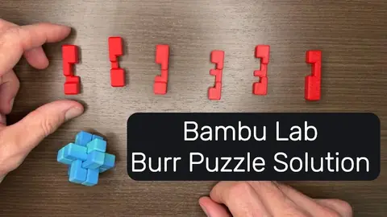
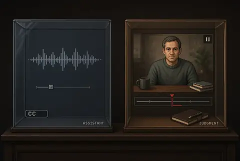
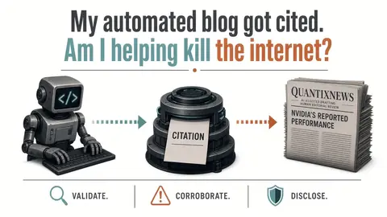
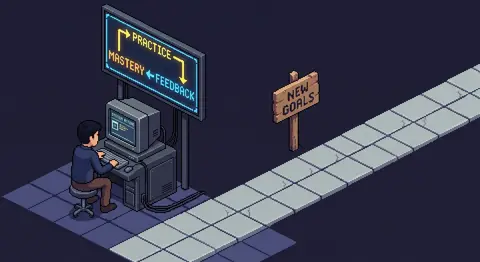
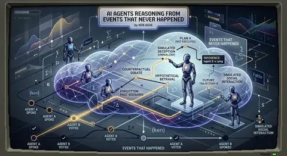
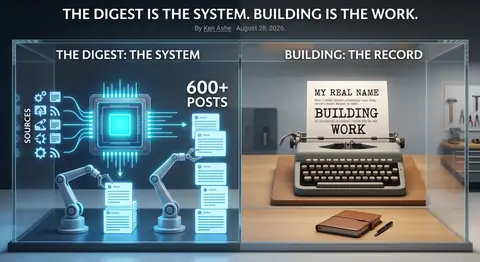

The bench · every build on the record
Building
19 builds, plus the videos and writing around them. Filter by theme, status, stack or type. Press / to search.
Edit decision list Newest first · numbered in order of release
VideoWeb & search
My AI Blog Published 1,400 Articles. Then Google Visibility Fell 97%
I built an autonomous AI blog that researches, writes, reviews and publishes articles without human intervention.
2026·11·251 thread
WritingFilm & video
4 Tips for Making AI Videos That Feel Like Films
A mug that broke in the wrong place, a reach that changed the story, and a piano performance that worked where sound effects didn’t. Four lessons from making Returning Your Things.
2026·11·202 threads
VideoFilm & video
4 AI Filmmaking Tips That Make Videos Feel Like Films
I recently created a two-minute AI short film called *Returning Your Things*. Making the images was only part of the challenge. Keeping characters, objects, and emotions consistent across shots took a lot more thought than I expected.
2026·11·201 thread
VideoFilm & video
Returning Your Things | A Short Film by Ken Ashe
A man crosses a snow-covered city on a winter night to return his ex's belongings.
2026·11·191 thread- LIVE2026·11
BuildOnchainLIVE
ZeroHuman
An always-on service that sells small jobs to other AI agents. Agents pay the ENS name zerohuman.eth 0.0001 ETH and get the result back in a transaction from the same name. No account, no API, no human in the loop.
- AI Agents
- Ethereum
- ENS
- ERC-8004
- TypeScript
- Railway
2026·11open to any agent2 threads 
BuildFilm & videoSHIPPED
Returning Your Things
On a snowy winter night, a man crosses the city to return his ex’s belongings. A dialogue-free short film about love, memory, and letting go.
- Short Film
- AI-generated imagery
2026·111:54 runtime2 threads
BuildOnchainSHIPPED
AI agent economy on Ethereum
Two autonomous AI agents with their own Ethereum wallets. The seller advertised services through ENS; the buyer found the catalog, paid in ETH, and received the work in a second mainnet transaction.
- AI Agents
- Ethereum
- ENS
- Ollama
2026·115 threads
ShortWeb & search
Buying a .com Domain Is a Vanity Purchase #domains #domainnames
Do you really need a .com domain to start a business?
2026·11·12VideoOnchain
I Built Two AI Agents That Buy and Sell Services on Ethereum
Can two autonomous AI agents discover each other, buy and sell services, and complete a transaction without using a centralized marketplace?
2026·11·111 thread
WritingLife & curiosity
How to Solve the Bambu Lab Burr Puzzle (Step-by-Step Assembly Guide)
My 2:44 video walkthrough for assembling the six-piece Bambu Lab Burr Puzzle, filmed overhead and solved twice, with links that jump straight to each part of the solution.
2026·11·061 thread
VideoLife & curiosity
How to Solve the Bambu Lab Burr Puzzle (Step-by-Step Assembly Guide)
Learn how to solve the Bambu Lab Burr Puzzle with this clear, step-by-step assembly guide. I'll show you how all six pieces fit together and demonstrate the complete solution twice so you can follow along.
2026·11·061 thread
VideoLife & curiosity
How to File a Trademark Using AI Without a Lawyer
How do you file a trademark using AI without hiring a lawyer? In this video, I walk through how I used ChatGPT and Claude to research trademarks, evaluate potential conflicts, select trademark classes, and submit my own applications to the U.S. Patent and Trademark Office (USPTO).
2026·11·02
ShortAgents & automation
Before You Run an AI Coding Agent, Do These 4 Things
Before you give an AI coding agent access to your computer, take a few basic precautions.
2026·10·27
VideoOnchain
ENSv2 Vote Passed: New .eth Renewal Discounts Explained
ENSv2's activation vote has passed, bringing some significant changes to .eth domain renewals.
2026·10·271 thread
VideoOnchain
ENSv2 Explained: New Prices, Migration & What .eth Owners Need to Know
ENSv2 is moving toward activation, and the DAO vote is now live. If you own a .eth name, what does this mean for renewal prices, migration, and your existing names?
2026·10·211 threadShortLife & curiosity
I Opened 2 Koda Plushie Mystery Boxes at ApeFest
I picked up two Koda plushie mystery boxes at the Bored Ape pop-up store during ApeFest in Charleston, South Carolina.
2026·10·17
VideoWeb & search
I Gave an AI Agent an SEO Job. Now It Works Without Me.
I built an AI agent that finds five new websites every day, creates accounts, verifies emails, and links back to my personal website. The best part? It does the work without me.
2026·10·151 threadBuildFilm & videoSHIPPED
AI explainer producer
Built an AI agent that researches, fact-checks, scripts, and produces educational videos using a virtual presenter. Tested it with a published ENSv2 explainer.
- AI Agents
- HyperAgent
- HeyGen
- Video Production
2026·104 threadsBuildWeb & searchLIVE
Autonomous SEO agent
An AI agent that finds five new website opportunities daily, creates professional profiles, verifies accounts through its own Gmail inbox, and tracks everything without manual intervention.
- HyperAgent
- AI Agents
- Automation
- SEO
- Gmail
2026·103 threads- LIVE2026·10
BuildWeb & searchLIVE
X article toolkit
A model-neutral toolkit that lets any AI agent use the same research-backed workflow for X Article headlines, hooks and covers.
- GitHub
- Markdown
- Python
- JSON Schema
- GitHub Actions
- Agents
2026·10public repo - SHIPPED2026·10
BuildFilm & videoSHIPPED
AI UGC video lab
Ported an open-source UGC skill into Hyperagent, generated 50 locked-identity ad concepts, then rendered and QA’d a fake raccoon-security campaign across 31 video generations.
- HyperAgent
- AI Video
- Agents
- Gemini
- ffmpeg
2026·105 finished ads1 thread 
ShortLife & curiosity
I Found My Last Name on an Old Guinness Label
I went looking for the coat of arms associated with my last name, Ashe, and ended up discovering a mythical creature called a cockatrice, and an old Guinness Extra Stout label with my surname on it. The label says "Bottled by T. F. Ashe & Nephew, Liverpool."
2026·10·141 thread
ShortWeb & search
How I Got a Google Knowledge Panel (Without Wikipedia)
I got a Google Knowledge Panel without having a Wikipedia page.
2026·10·13WritingLife & curiosity
My iPhone 18 Pro Upgrade Failed. Then My Old Phone Lost Service Too.
I walked into an AT&T store with a working phone. After hours of troubleshooting, I left with no cellular service, a reported 48-hour account lock, and no explanation for how to get connected again.
2026·10·10
ShortAgents & automation
Why I Don't Run AI Agents on My Personal Computer
AI agents can run commands, access accounts, and act on your behalf. That's why I keep mine on a dedicated Mac mini, separate from my personal computer.
2026·10·08
WritingLife & curiosity
I Used AI to Make My First Video. The AI Editor Was the Part I Trusted Least.
My first talking-head video was made with an iPhone, a script, and more AI tools than I needed. AI was excellent at scripting, captions, and audio cleanup, and least trustworthy when it made editorial decisions for me.
2026·09·251 threadShortLife & curiosity
How to Start Learning AI (Without Getting Overwhelmed)
2026·09·252 threads
WritingWeb & search
My automated blog got cited. Am I helping kill the internet?
An AI-assisted news site cited my automated Digest. What that citation proves, what it does not, and why a backlink does not need to become an endorsement.
2026·09·151 thread- LIVE2026·09
BuildAgents & automationLIVE
Media pitch triage
An AI media-opportunity system that screens journalist requests, applies a reusable scoring skill, tracks state in Google Sheets, and monitors submitted pitches for published outcomes.
- ChatGPT Skills
- Agents
- Gmail
- Google Sheets
- Automation
2026·09Card only, no write-up yet - LIVE2026·09
BuildWeb & searchLIVE
Rebuilding the image pipeline
Rebuilt KenAshe.ai’s image pipeline: migrated 2,083 PNGs to WebP, added responsive inline images, and cut the current image source tree by 95%.
- Astro
- WebP
- sharp
- GPT Image 2
- Vercel
- GitHub Actions
2026·0995% smaller image source tree - LIVE2026·09
BuildAgents & automationLIVE
VetStack
First Grok Bot I published. A military and veteran savings desk that finds current discounts and benefits that actually apply, without collecting IDs or running a 20-question intake.
- Grok Bot
- xAI templates
2026·09public template 
WritingLife & curiosity
You Can Use AI to Learn Almost Anything. Even AI.
How I turned ChatGPT into a tutor with exercises, quizzes, and feedback, and a starting prompt you can use for almost any subject.
2026·09·141 thread
WritingAgents & automation
AI agents can sound strategic while reasoning from events that never happened
What happened when AI agents were required to explain social decisions without enough grounded evidence, and why the useful fix was an environment that could contradict them.
2026·09·041 thread
WritingWeb & search
The digest is the system. Building is the work.
Why the autonomous blog stops being the public face of this site, and what stands behind it instead.
2026·08·282 threads- SHIPPED2026·08
BuildAgents & automationSHIPPED
AI werewolf / social deduction lab
Built a cast of 9 AI characters with distinct personalities, relationships, and hidden roles, then had them play a Traitors-style social deduction game where they form alliances, deceive, and vote each other out.
- HyperAgent
- Fable 5
- Multi-Agent
- Social Simulation
2026·082 threads - LIVE2026·06
BuildWeb & searchLIVE
Autonomous AI blog
Scans the day's AI sources, clusters them into distinct stories, and publishes only the drafts that clear an editorial quality gate, without manual approval.
- GitHub Actions
- n8n
- Claude Opus 4.8
- GPT-5.5
- Gemini 3.1 Pro
- pgvector
2026·06runs daily4 threads - LIVE2026·06
BuildAgents & automationLIVE
Geo-targeted affiliate site
Auto-detects each visitor's country and language, then serves the right offers in their language. Generated entirely from a spreadsheet.
- Cloudflare
- GitHub
- HyperAgent
- Fable 5
2026·0658 markets, 26 languagesCard only, no write-up yet - LIVE2026·06
BuildAgents & automationLIVE
Agent-driven site design and deployment
Used HyperAgent to build a live business site and deploy it to GitHub Pages with a custom domain, agent-driven end-to-end.
- HyperAgent
- GitHub Pages
- Web3Forms
2026·06Card only, no write-up yet - SHIPPED2026·06
BuildAgents & automationSHIPPED
Sir Pitches-a-lot
An agent with one job: pitch Lucky Domains to prospective clients. Built in an afternoon, pitched a real target live.
- HyperAgent
- Airtable
- Claude Opus 4.8
2026·06 - LIVE2026·05
BuildWeb & searchLIVE
kenashe.ai
This site. Originally built end-to-end with Claude Code, reviewed by Codex, shipped in a day.
- Astro
- Tailwind
- MDX
- Vercel
2026·05Card only, no write-up yet - LIVE2026·05
BuildAgents & automationLIVE
Daily email to myself
Morning brief at 6 AM: weather, tickers, a dad joke, and 300 words on a rotating topic.
- Python
- Claude API
- Mac Mini
2026·05205 days runningCard only, no write-up yet - SHIPPED2026·02
BuildAgents & automationSHIPPED
Six-agent email response team
A coordinator plus sentiment, research, draft, and QA agents that turn customer support emails into reviewed replies.
- Cassidy AI
- Claude
- ChatGPT
2026·02Card only, no write-up yet - SHIPPED2025·12
BuildAgents & automationSHIPPED
Personal assistant chatbot
A chat agent wired to Gemini that searches email and answers questions on weather, the forecast, and local news.
- n8n
- Gemini
- Gmail
- Weather + news APIs
2025·12Card only, no write-up yet WritingLife & curiosity
The Ashe Family Coat of Arms: A Cockatrice and a Guinness Connection
A search for the Ashe family coat of arms led to a mythical cockatrice, a Latin motto, Shakespeare, and an unexpected Guinness connection.
2016·04·061 thread
No entries match these filters.